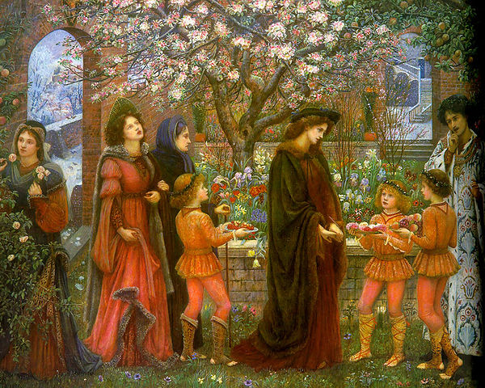
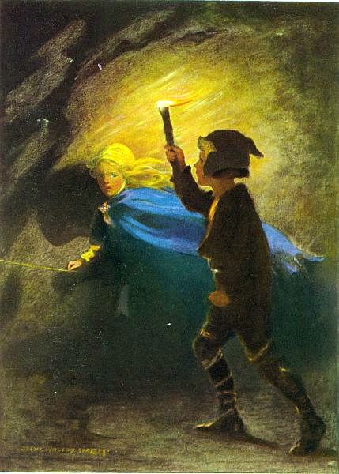

- Фентезі -
«Фея світанку» у виданні «Книга фіолетової феї» (1906)
Фе́нтезі (слово середнього роду, англ. fantasy — фантазія) — піджанр фантастики — одного з жанрів сучасного мистецтва, дія якого відбувається у вигаданому світі, де чудеса і вигадка нашого світу є реальністю. Світ є подібним до Середньовіччя, властивою основою світу є магія, він наповнений чарівними істотами, оповідь епічна, тому час зациклений і йде по колу (є зміна пір року, однак нема історичного розвитку епохи). Ці риси визначальні для фентезі і поєднують жанр із літературною казкою.
Магія й інші надприродні явища не обов'язково повинні бути головними елементами сюжету, теми чи місця дії, проте в будь-якому випадку вони присутні у творі як частина картини світу. Багато історій цього жанру відбуваються у вигаданих світах, де чари є звичною річчю. Як правило, від наукової фантастики та літератури жахів фентезі відрізняється відсутністю (псевдо)-наукових та макабричних тем, хоча усі три жанри мають багато спільного.
У популярній культурі переважає умовно середньовічна форма жанру фентезі, особливо після всесвітнього успіху трилогії «Володар Перснів» Дж. Р. Р. Толкіна. Проте в ширшому, вульгарному розмовному значенні до фентезійного жанру відносять твори багатьох письменників, художників, кінорежисерів і музикантів — починаючи від імітації стародавніх міфів та легенд і закінчуючи творами про сучасність, популярними серед широкого загалу.
Також у наші дні фентезі — це жанр у живопису, кінематографі, відеоіграх і настільних іграх.
- Зміст -
Риси фентезі
Найголовнішими рисами жанру є фантастичні елементи, включені у внутрішньо цілісне місце дії, а незмінною темою — запозичення з міфології та фольклору. Така структура допускає існування будь-якого фантастичного елементу: він може бути прихованим, або проникати в на вигляд реальний світ, може втягувати героїв у світ із саме такими елементами, або може відбуватися у вигаданому світі, в якому такі елементи є невіддільною частиною. По суті, фентезійний світ керується законами, які сам створює, дозволяючи використання магії та інших фантастичних прийомів, однак залишаючись внутрішньо цілісним.
Історія
В багатьох творах є незрозуміло, чи автори їх вірили в чуда,
які описували, як
наприклад в зачарованому саду з
Декамерона.
Містичні та інші елементи, які згодом окреслили фентезі та його різні піджанри, завжди були частиною деяких із найвидатніших і найпопулярніших літературних творів, починаючи, мабуть, з «Епосу про Гільгамеша» та інших найдавніших записів, відомих людству. Від «Одісеї» до «Беовульфа», від «Махабхарати» до «Тисячі й однієї ночі», від «Рамаяни» до «Подорожі на Захід», і від Артурівського циклу і лицарського роману до епічної поеми «Божественна комедія» — фантастичні пригоди про відважних героїв та героїнь, смертоносних монстрів і таємничі світи, надихали багатьох авторів і читачів. У цьому сенсі історія фентезі нерозривно пов'язана з історією літератури.
Існує багато творів, в яких межа між фентезі та іншими жанрами літератури є розмитою, а питання, чи вірили в можливість чуда автори таких творів як «Сон літньої ночі» чи «Сер Гавейн і Зелений лицар», не дозволяє чітко визначити, коли з'явилося фентезі в його сучасному сенсі.
Зазвичай історію сучасного фентезі ведуть від Джорджа МакДональда, шотландського автора таких творів як «Принцеса і гоблін» та «Фантасти» (1858), останній з яких вважається першим романом в жанрі фентезі для дорослих. МакДональд справив великий вплив на творчість Дж. Р. Р. Толкіна і К. С. Льюїса. Ще одним видатним автором цього періоду був Вільям Морріс, популярний англійський поет, який наприкінці XIX ст. написав кілька романів, у тому числі «Колодязь на краю світу».
В XIX і на початку XX століття (а в СРСР — до початку 1990-х років) твори у жанрі фентезі часто публікувалися в тих самих журналах, що й наукова фантастика, і були часто написані тими ж авторами. Справжнє народження сучасного фентезі відбулося після публікації «Володаря перснів» Дж. Р. Р. Толкіна. Ця книга, а також «Хроніки Нарнії» К. С. Льюїса і «Земномор'я» (Earthsea) Урсули Кребер Ле Гуїн заклали основи одного з найпопулярніших жанрів, у якому зараз працюють сотні письменників.
Рольові ігри
Ілюстрація до роману Джорджа Макдональда
«Принцеса й гоблін», видання 1920 р.
У 1960-х-1970-x роках фентезі стало основою, на якій зародилися рольові ігри. У рольових іграх персонаж або ватага з декількох персонажів подорожує фентезійним світом у пошуках різних пригод (виконання завдань, пошук артефактів). При цьому кожний персонаж має різноманітні характеристики, які змінюються зі збільшенням досвіду. Dungeons & Dragons (Підземелля й дракони) стала однією з найуспішніших ігрових систем і сама внесла до фентезі певні елементи, які з часом стали класичними для жанру
Рольові ігри своєю чергою породили нову хвилю літератури в жанрі фентезі. Ігрові компанії видають книги, в основі яких лежать їхні фантастичні всесвіти. Серед найпопулярніших серій: Forgotten Realms, WarCraft та Battletech
Жанри
Героїчне фентезі
Якщо забути про міфи про Геракла й книги про Тарзана, то першим представником цього піджанру є сага Роберта Говарда про Конана з Кімерії.
Успіх цієї серії породив безліч наслідувань (Фріц Лайбер, Фред Сейберхеген, Ларрі Нівен) і в результаті майже всі герої таких книг — фізично розвинені варвари двометрового росту, що надають перевагу великій дворучній зброї та рідко вміють читати. Герої героїчного фентезі подорожують поодинці або підбираючи на час яких-небудь екзотичних супутників, воліють розв'язувати проблеми методом грубої сили. Коло обов'язків героїв досить широке: мандри світом, винищування різної погані, протистояння дрібним темним володарям, порятунок красунь, видобуток коштовних артефактів.
Героїчного фентезі Майкла Муркока різко відрізняється від книг Говарда. Наближаючись до епічного фентезі (сам Муркок неодноразово різко висловлювався проти епічного фентезі), Муркок включає у свої книги поняття множинності світів, нескінченності втілень і повторюваності долі. Всі герої Муркока — Корум, Хокмун, Ерікезе, Ельрік — є різними інкарнаціями одного Вічного Героя.
Кожен з героїв Муркока — принц, має кохану й вірного друга, бореться особливим, йому одним призначеним мечем (звичайно Чорний Меч, знову ж втілення Вічного Меча Вічного Героя; Чорний Меч зустрічається в багатьох книгах), і має якусь фізичну особливість, що різко відрізняє його від всіх інших людей і надає йому відтінок приреченості. Принц Корум, наприклад, взагалі не людина, а останній принц загубленої древньої раси, і з цієї причини має жовті очі із червоними білками, принц Ельрік — альбінос тощо.
Отже, казково-міфологічна шаблонність і варіативність зроблені в Муркока частиною сюжету й служать для зв'язності циклу.
Письменники:
- Роберт Говард — Конан
- Майкл Муркок — автор «Саги про Ельріке Мелнібонейського», «Хронік родини фон Бек», «Хронік Корума».
Високе (епічне) фентезі
Твори цього жанру епічне фентезі витримано в серйозному тоні. Ці епічні полотна в основному описують боротьбу з надприродними силами зла. Жанр характеризується наявністю фантастичних рас (ельфи, гноми, гобліни), концепції магії, докладними мапами місць дії, пророцтвами, що віщують лихо, винайденими мовами й багатотомними розмірами.
Стандартним обов'язком автора високого фентезі стало виписування дрібних деталей фантастичного світу, в якому відбуваються події історії. Найбільших успіхів на цих теренах досяг Дж. Р. Р. Толкін, автор «Володаря перснів», «Гобіта», твору, що передує знаменитій трилогії, і «Сильмариліону». Толкін не стільки писав історію, скільки придумував мови, а вже на їхній основі — і всю міфологію народів, що населяють його світ. Саме Толкін ввів у масову культуру в сучасному вигляді ельфів — витончених безсмертних створінь, гномів (низькорослі сильні підгірські жителі, спеціалізуються на виробах з металу й каменю) та ентів (довгоживучі деревоподібні гуманоїди).
Роберт Джордан не занадто відстав від Толкіна. Його цикл «Колесо часу» у фанатських базах даних налічується понад 1700 персонажів. У світі Джордана присутні більше ніж десять націй, кожна зі своїми традиціями й особливостями, а також зовсім особлива раса оґрів, що є сумішшю толкінівських гномів і ентів. За життя автор написав 11 томів, проте завершальний — «Пам'ять світла» — дописати не встиг.
Письменники:
- Дж. Р. Р. Толкін — «Володар перснів»
- Джордж Мартін — «Пісня льоду й полум'я»
- Тед Вільямс — «Орден Манускрипту»
- Роберт Джордан — «Колесо часу»
- Террі Гудкайнд — «Меч істини», він же — «Правила чарівника»
- Роджер Желязни — «Хроніки Амбера»
- Ґлен Кук — «Хроніки Чорного загону» та «Імперія Жаху»
- Андре Нортон — автор книг про «Чаклунський світ», у її книгах важлива насамперед магія, розум і хитрість, а потім уже військове мистецтво й сила.
- Анджей Сапковський — «Відьмак»
- Урсула Кребер Ле Гуїн з циклу «Земномор'я» — «Чарівник Земномор'я», «Гробниці Атуану», «Останній берег», «Техану»
- Крістофер Паоліні — «Ераґон»
- Робін Гобб — «Королівський Вбивця»
Ігрове фентезі
Ігрове фентезі натхненно рольовими іграми. Звичайно книги цього жанру схожі на опис подій, що відбулися у грі — група героїв подорожує по світу, підкоряючись рольовим правилам (наприклад, у накладенні заклинань).
Письменники:
- Трейсі Хікман і Маргарет Вейс знамениті сагою про «Спис Дракона» («Дракони осінніх сутінків», «Дракони Зимової ночі», «Дракони весняного світанку» і «Дракони літнього полудня») і його продовженнями («Близнюки» тощо).
- Стівен Рокс «Країна Квітів і кольорові світи» Прекрасно написана книга про вигадану країну Квітів, де діють герої-квіти й безліч невідомих читачеві міфологічних сутностей. Абсолютно новий світ, де реальність зливається з вигадкою, а вигадка переходить у реальність
Історичне фентезі
Цей піджанр тісно пов'язаний з альтернативною історією. Дія звичайно відбувається в минулому, на тлі відомих історичних місць, подій або епох, але з додаванням таких елементів фентезі, як магія або міфологічні істоти.
Письменники:
- В історичній фентезі вирізнилася Мері Стюарт своїми романами «Кришталевий грот», «Порожні пагорби» і «Останнє чарівництво», це альтернативний варіант історії Мерліна й короля Артура.
- Анджей Сапковський — «Саґа про Рейневана»
- Джордж Мартін — «Пісня льоду та полум'я»
Гумористичне фентезі
Книги цього жанру в основному гумористичні по змісту й тону. У них часто висміюються штампи фентезі, пародіюються відомі добутки.
Письменники:
- Террі Пратчетт — «Плаский світ»
- Джек Венс — «Вмираюча земля»
- Роберт Аспрін — «Міфологія»
- Макс Фрай — «Лабіринти Ехо»
- Ґлен Кук — «Пригоди Гаррета»
Фентезі у живописі
Фентезі у формі фольклору, міфів та легенд існувало ще до створення самостійного жанру фентезі. Живописцями в схожому стилі були прерафаеліти.
Живопис у стилі фентезі розвивався паралельно із літературою. Художники часто малювали обкладинки для книжок та ілюстрації. Прикладом сучасного фентезі-ілюстратора є Брайан Фрауд. У стилі фентезі працює сучасна британська художниця Жозефіна Волл.